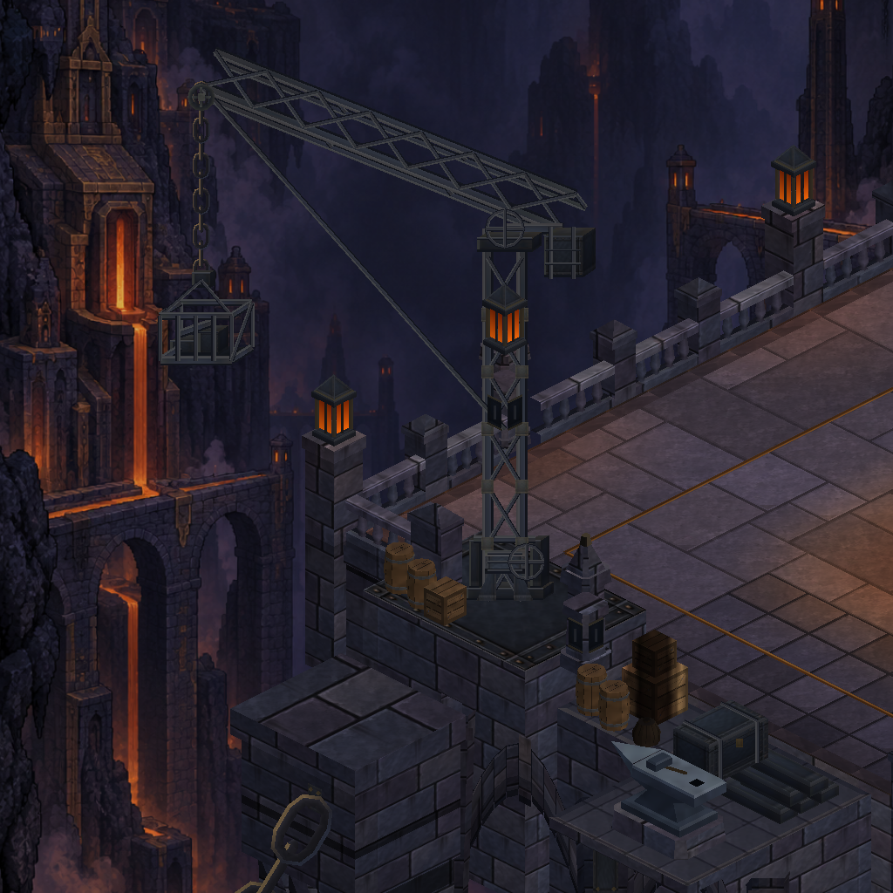
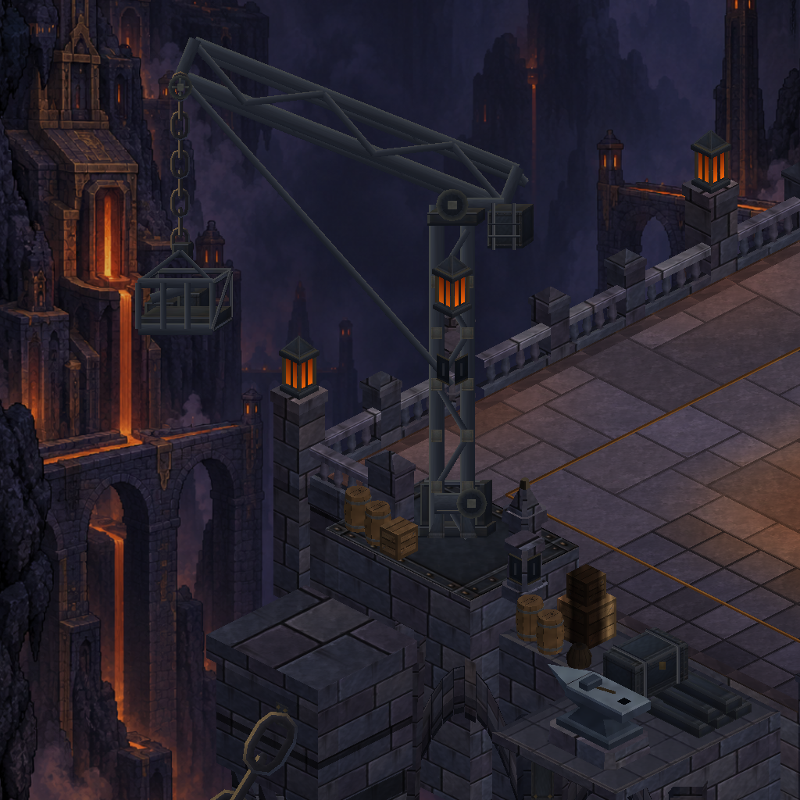
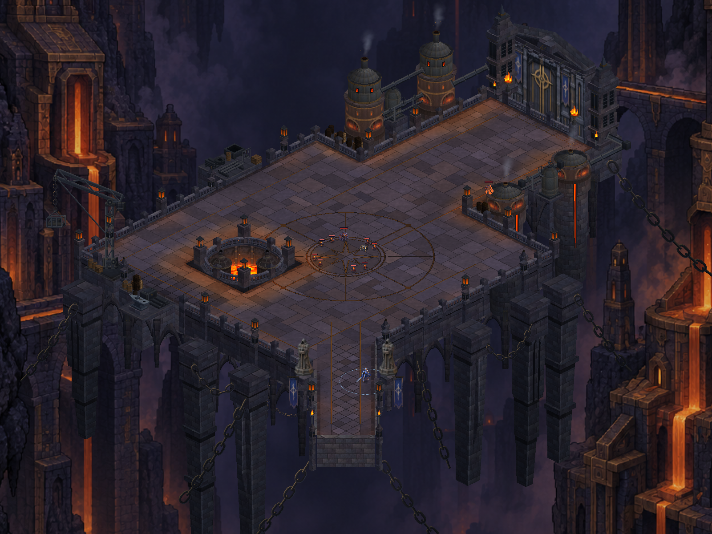
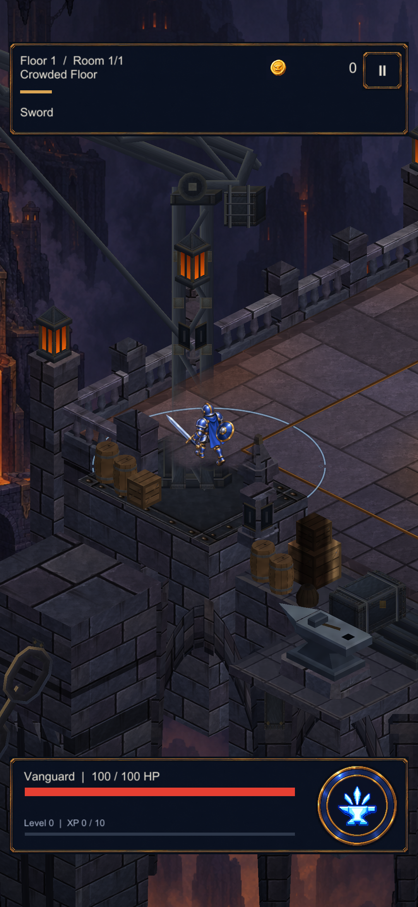
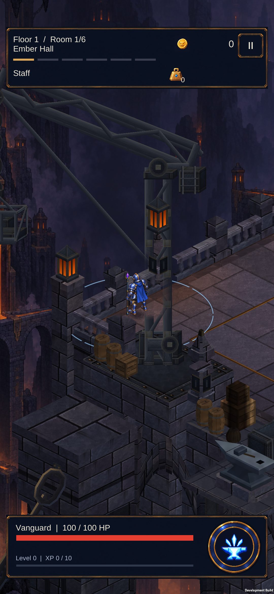
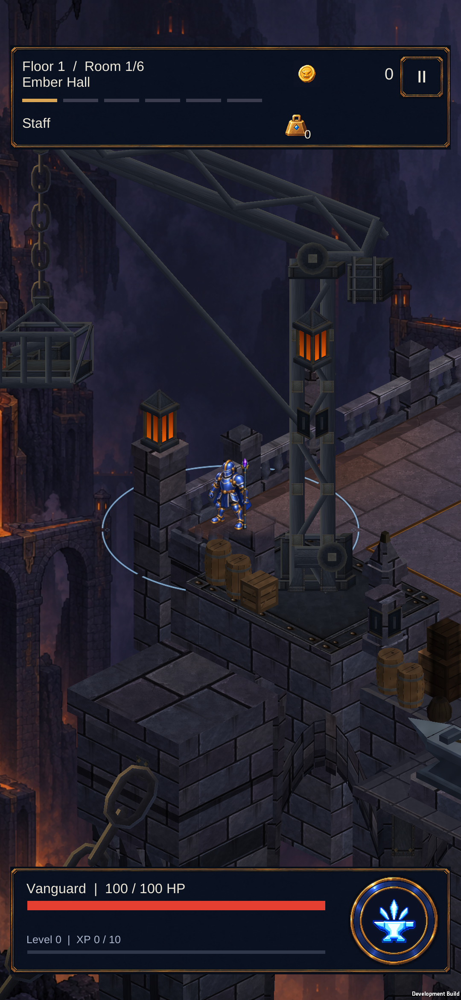

Dökümhane vinci
Taşıyıcı demir gövde, makara, tambur ve asılı hurda sepeti birlikte düzenlendi. Gerçek Unity görüntüleri.

Önce
SonraHarita içindeki görünüm

Oyun kamerası

Karakter için yerel saydamlaşmaTelefonda

S23: avlu yaklaşımı
S23: kenar görünümüDoğrulama kaydı